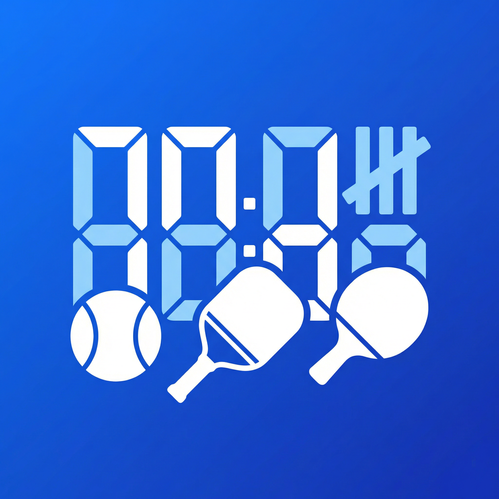
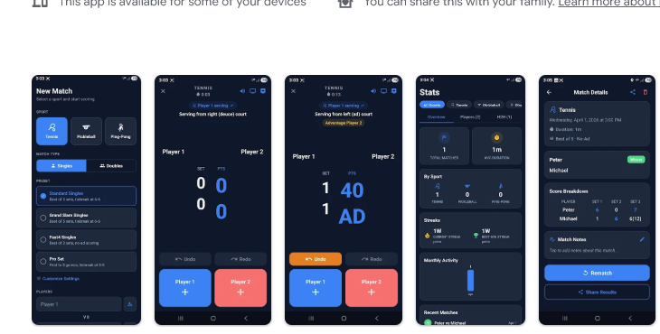
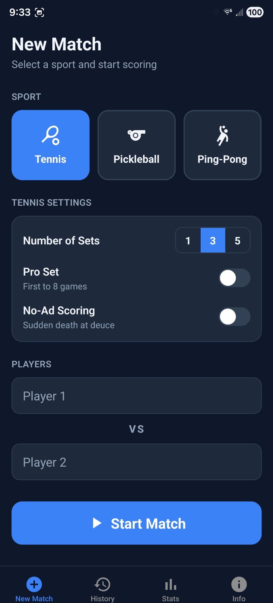
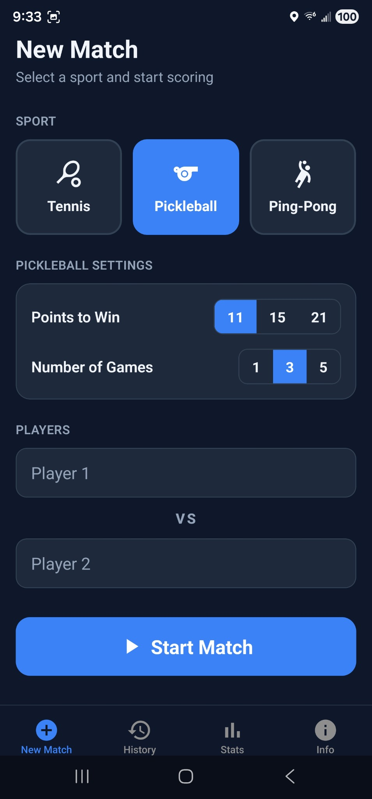
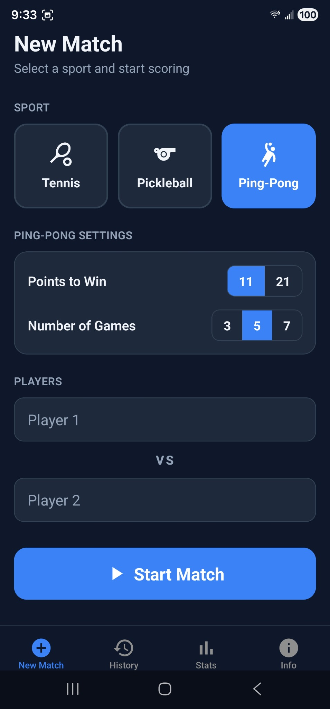
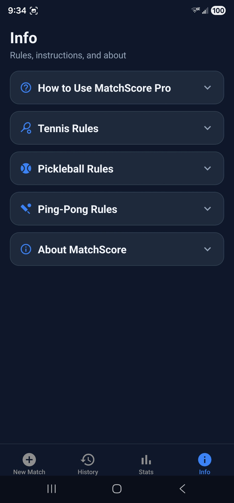
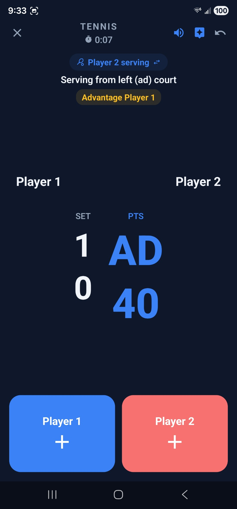
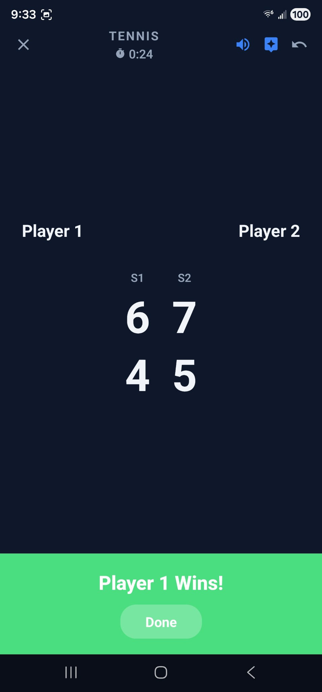
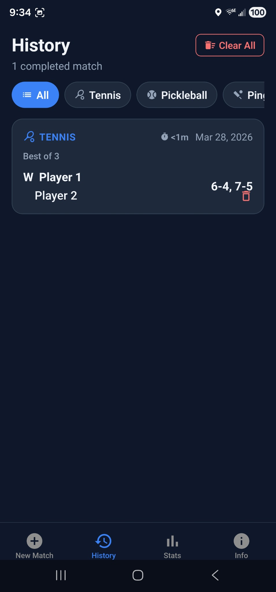
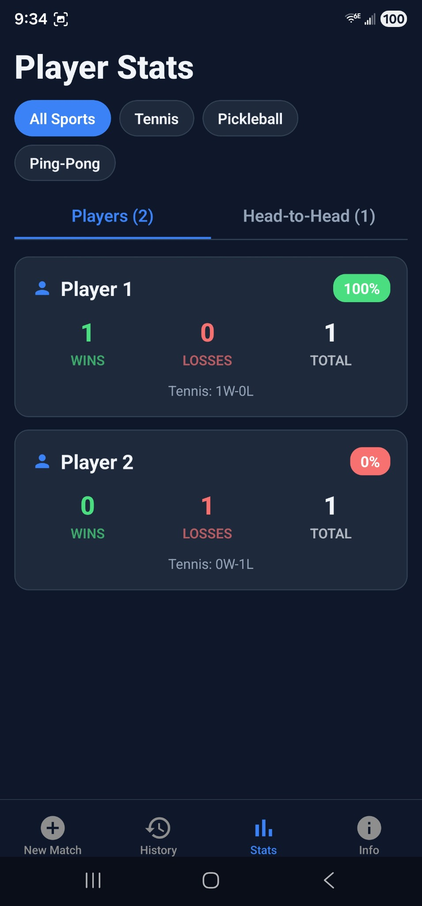

Choose a sport
Open the New Match tab and choose Tennis, Pickleball, or Ping-Pong.

A simple guide for scoring tennis, pickleball, and ping-pong matches, tracking player history, reviewing stats, and getting more out of MatchScore Pro.


The fastest path is simple: choose a sport, pick a preset, add player names, and start scoring. MatchScore Pro handles the scoring rules for you.
Open the New Match tab and choose Tennis, Pickleball, or Ping-Pong.
Select a built-in preset or adjust the match settings manually for your preferred format.
Enter names by hand or select saved Player Profiles. You can choose Singles or Doubles.
Tap Start Match, then tap the left or right side during play to award points instantly.

Choose tennis, set the number of sets, and enter player names.

Pick points to win, number of games, and start scoring fast.

Use the Ping-Pong format with its own points and game settings.

The Info tab keeps rules, instructions, and app details in one place.
Use presets for speed or customize everything yourself. MatchScore Pro supports different sports, formats, and player setups without making the setup screen feel heavy.
Presets apply common rule sets automatically so you can get on court faster.
Switch between Singles and Doubles directly on the New Match screen.
Tap a player field during setup to search your saved profiles instead of typing each name again. This makes repeat matches much faster and keeps your stats consistent.
The live scoring screen is designed to be fast under pressure. Tap the side that won the point and let the app manage the rule logic in the background.

See serving guidance, current score, and large tap targets for each side.

Review the final result right after the match ends.

Browse completed matches and filter them by sport.

Track wins, losses, totals, and head-to-head records.
Tap the left or right side of the screen to give a point to the correct player or team. The score updates immediately.
Use Undo to reverse a mistaken point. Use Redo to re-apply it. Redo clears when a new point is scored.
The app automatically advances games, sets, tiebreaks, and match completion based on your chosen settings.
See serving guidance, court-side prompts, and alerts such as Deuce, Advantage, Set Point, Match Point, Tiebreak, and Change Ends.
Turn on spoken alerts from the top bar to hear important moments during play. Voice announcements work offline.
Tap the TV icon during a match for a large, easy-to-read display that works well from across the court.
When the match ends, MatchScore Pro takes you to a summary screen so you can review the result, start a rematch, or share the outcome.
See the winner, final score, score breakdown, and match duration.
Start a rematch with the same players and settings without rebuilding the setup from scratch.
Share the outcome when you want a quick way to send the final score to others.
Your completed matches stay organized in one place so you can revisit results, review details, and start rematches later.
The Stats tab turns your match history into something useful, from overall totals to player rankings and head-to-head records.
Total matches, win rate, average duration, streaks, and monthly match counts.
A quick look at your last 10 match results so you can spot trends at a glance.
See players ranked by matches played and win rate, with sport-by-sport breakdowns.
Review win-loss records between players or teams and compare results by sport.
In doubles, each player on the winning team gets credit so individual stats still stay meaningful.
Monthly activity helps you see how often you are playing and whether your volume is changing.
The Players tab helps you build a reusable list of player profiles so setup becomes faster and your records stay cleaner.
Use Settings to decide how new matches should start and how the app behaves by default.
The app includes a one-time Pro unlock for players who want advanced features, bigger tracking limits, and more match setup options.
Free users can save up to 4 player profiles and get 1 preset per sport. Pro removes those limits and opens the full feature set.
If you already bought Pro on the same Google account, use the restore option in the app to recover your unlock after reinstalling or moving to a new device.
The in-app product ID in the project is matchscore_pro_unlock.
A few quick answers for the things people usually want to know first.
Yes. Core scoring and voice announcements are designed to work without an internet connection.
Your active match is saved. When you reopen the app, you can resume where you left off or abandon the in-progress match.
Yes. Tap a player name field during match setup to search and select saved Player Profiles.
Yes. During a live match, tap the TV icon to open Spectator Mode for a larger display that is easier to read from a distance.